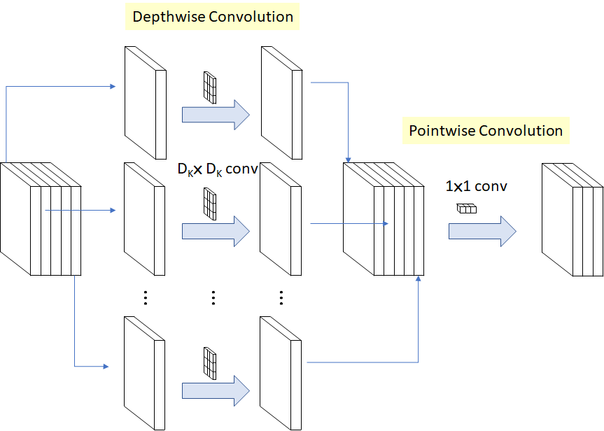

Rock, Paper, Scissors
Project Overview
This demo allows a user to feed a MobileNet labeled images from their webcam to classify hand gestures as rock, paper, or scissors.
This demo allows a user to feed a MobileNet labeled images from their webcam to classify hand gestures as rock, paper, or scissors.
This demo uses a MobileNet to classify images into 1000 different categories (full list of categories here).
 Here you'll find a model that trains in browser with TensorFlow.js. It may take a while to train and can be a bit buggy, but once training is complete, you will be prompted to draw a number on the black square. Press classify to see which number the model predicts your input as and clear if you wish to draw another digit.
Here you'll find a model that trains in browser with TensorFlow.js. It may take a while to train and can be a bit buggy, but once training is complete, you will be prompted to draw a number on the black square. Press classify to see which number the model predicts your input as and clear if you wish to draw another digit.
Instead of training in-browser, we can import a model that has been pre-trained on 2 million comments labeled for toxicity and then use this model to classify user inputs. You can find a demo here.